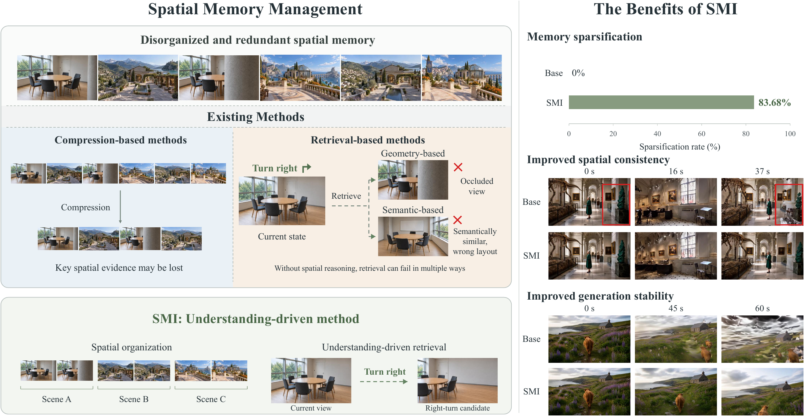

01ORGANIZE
Spatial
clustering
Group spatially related observations into coherent memory clusters.
SMI / VIDEO WORLD MODELS
Endowing World Models with Understanding-Driven Long-Term Memory
From redundant visual histories
to useful spatial memories.

As historical memory grows, managing spatial memory becomes increasingly complex, requiring coordinated organization, maintenance, sparsification, and retrieval. This calls for a more intelligent and comprehensive memory-management approach.
We propose Spatial Memory Intelligence (SMI), the first understanding-driven unified spatial-memory manager. Four coordinated atomic operations bring semantic and spatial reasoning into the memory-management pipeline, supporting improvements in memory sparsity, spatial consistency, and generation stability across multiple baselines, benchmarks, and world-model backbones.
Organize, consolidate, retrieve,
and maintain spatial memory.

Group spatially related observations into coherent memory clusters.
Remove redundant observations while retaining useful spatial evidence.
Select memories using recent context and the action that comes next.
Keep unreliable generated observations from entering persistent memory.
Side-by-side, in sync.
Loading videos…
This page will grow with
the project’s public release.
The paper link will be added here.
Private development repository. GitHub access is required.
Model weights will be linked here.
The dataset link will be added here.